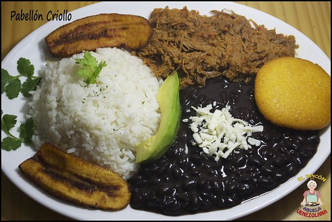

Pabellon Criollo Venezolano / Arepas / Feijão / A carne / Banana da terra
Cadastro no Restaurant da Comida Venezuelana
Autor: Robert Raimundo Garabán Garcías
Culinária da Venezuela
A Culinária da Venezuela tem tradição em alimentos como o feijao preto , as bananas cozidas e
o arroz, os quais comem-se normalmente acompanhados de carne bovina, suína, frango ou frutos do
mar. O pão tradicional é composto de um bolo em formato de círculo, feito à base de fubá, o qual
chama-se arepa.
Aprenda a fazer duas receitas típicas da Venezuela
Comida da Venezuela
O Bahia Meio Dia desta terça-feira (18) mostrou como fazer Cachapa e Arepa, receitas típicas da Venezuela,
adversária do Brasil na Copa América, nesta noite. A partida será às 21h30, na Arena Fonte Nova.
Quem fez as duas receitas foi o venezuelano José Alvarec, que mora em Salvador há um ano. Ele disse que os dois
"pratos" são muito tradicionais e os chamou de "hinos". Em uma brincadeira, o Bahia Meio Dia levou os lanches para
os baianos experimentarem nas ruas de Salvador. Veja abaixo como preparar as duas receitas.
Cachapa
Comida da Venezuela / Cachapas
Ingredientes
2 latas de milho verde em conserva (ou o equivalente em milho fresco).
2 ovos
80 ml de creme de leite.
2 colheres de sopa cheias de açúcar.
1 pitada de sal.
4 colheres de sopa de farinha.
2 colheres de sopa de manteiga (ou margarina).
Modo de preparo
Junte todos os ingredientes e bata no liquidificador até ficar homogêneo. Unte uma frigideira com óleo abundante
e deixe esquentar bem. Coloque uma porção de massa suficiente para formar um disco grosso (mais grosso que uma
panqueca convencional).
Deixe cozinhar em fogo baixo, com o recipiente tampado, até a superfície secar e começar a formar uma crosta fina.
Quando a parte de baixo estiver começando a torrar vire a cachapa e deixe tostar o outro lado. Recheie com o ingrediente
da sua preferência. Se feita em uma frigideira pequena, a receita rende 6 cachapas..
Arepa
Comida da Venezuela / Arepas
Ingredientes
1 xícara de farinha de milho para polenta
1 xícara de mussarela ralada
2 colheres (sopa) de manteiga derretida
1 xícara de leite
50 g de manteiga
1 pitada de sal
100 g de queijo e presunto para rechear
Modo de preparo
Em uma tigela, misture a farinha de milho, o queijo e o sal. Acrescente o leite e a manteiga derretida e misture.
Deixe descansar por 5 minutos. Molde a massa como se fosse fazer panquecas. Em seguida, unte uma frigideira antiaderente
com manteiga e deixe em fogo médio..
Deixe cozinhar em fogo baixo, com o recipiente tampado, até a superfície secar e começar a formar uma crosta fina.
Quando a parte de baixo estiver começando a torrar vire a cachapa e deixe tostar o outro lado. Recheie com o ingrediente
da sua preferência. Se feita em uma frigideira pequena, a receita rende 6 cachapas..
Pabellón Criollo
Pabellon Criollo Venezolano / Arepas / Feijão / A carne / Banana da terra
O pabellón criollo é um dos pratos mais representativos da cozinha venezuelana. Cheio de cores e sabores variados.
É composto de Arroz Branco, Carne desfiada, feijão preto e fatias de banana da terra Fritas, dispostos todos de forma ornamental
destacando ao máximo seu colorido, aroma e sabor. N este prato se cria um equilíbrio entre todos seus componentes, tanto no
colorido como no sabor, cada um é parte importante da culinária venezuelana.
Ingredientes:
3oo g de feijão preto
500 g de cochão duro ou qualquer outra que desfia
2 xícaras (chá) de arroz
4 cebolas
2 dentes de alho
2 ramos de salsão
1 pimentão verde
2 pimentas de cheiro
2 ramos de salsa
2 ramos de cebolinha verde
Um punhado de orégano
1 colher (sopa) de tempero pronto
2 tomates
2 bananas da terra
2 colheres (sopa) de molho inglês
Sal a gosto1 xícara de farinha de milho para polenta
Feijão:
Colocar o feijão preto de molho de véspera e cozinhar numa panela de pressão com água.
Depois de cozido temperar com 1 cebola picada, um pedaço de pimentão verde, cebolinha e
alho picado, uma pimenta de cheiro e uma pitada de sal. Fritar esses temperos com azeite
e jogar no feijão já cozido, adicionar um ramo de salsão e um ramo de salsa. Deixar apurar.
A carne:
Meio quilo de cochão duro cozido na água com um ramo de salsão e um ramo de salsa. Cozinhar até
ficar macia (em panela de pressão).
Quando estiver pronta jogar a água do cozimento da carne no feijão
Fritar uma cebola picada, um alho, meio pimentão verde, dois tomates sem sementes picados, cebolinha
picada, pimenta de cheiro picada, molho inglês, orégano e o tempero pronto.
Depois de frito juntar a carne desfiada e deixar apurar. Adicionar uma pitada de sal.
Banana da terra:
Descascar duas bananas da terra, fatiar e fritar no óleo. Colocar em papel absorvente.
Preparar o arroz branco a gosto.
Montagem do prato:
Colocar no prato uma concha de feijão, o arroz, a carne e as bananas fritas e bom apetite.
Os habitantes de Caracas têm o costume de colocar um pouco de açúcar sobre o feijão e acreditem
fica delicioso!
Musica da Venezuela
Faça seu Prato de Comida Venezuelana ao Gosto de Voce